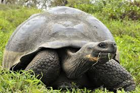
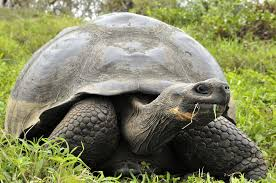

Такие виды черепах есть у нас в уголке:
- Среднеазиатская
- Красноухая
- Средиземноморская
- Слоновая
Черепахи (лат. Testudines) — один из четырёх современных отрядов
пресмыкающихся. Содержит около 328 современных видов, группируемых
в 14 семейств и два подотряда.Ископаемые остатки черепах
прослеживаются на протяжении более 220 миллионов лет.
Несмотря на то, что традиционно черепахи рассматривались как
анапсиды, все генетические исследования подтвердили гипотезу о том,
что черепахи — это диапсиды с редуцированными височными окнами;
некоторые авторы помещали черепах в группу лепидозавроморф, хотя все
более поздние исследования подтвердили их положение внутри группы
архозавроморф
Отличительным признаком черепах является панцирь, состоящий из двух
частей: карапакса и пластрона, и служащий основной защитой от врагов
Черепахи распространены в тропической и умеренной климатических
зонах почти по всей Земле. Экологически их подразделяют на морских и
наземных, а наземных, в свою очередь, на сухопутных и пресноводных[
Многие виды черепах служат пищей человеку, но мясо некоторых может
быть ядовитым. Также многие виды черепах находятся под угрозой
вымирания разной степени и охраняются. Черепаха является
распространённым символом в культуре многих народов
 
